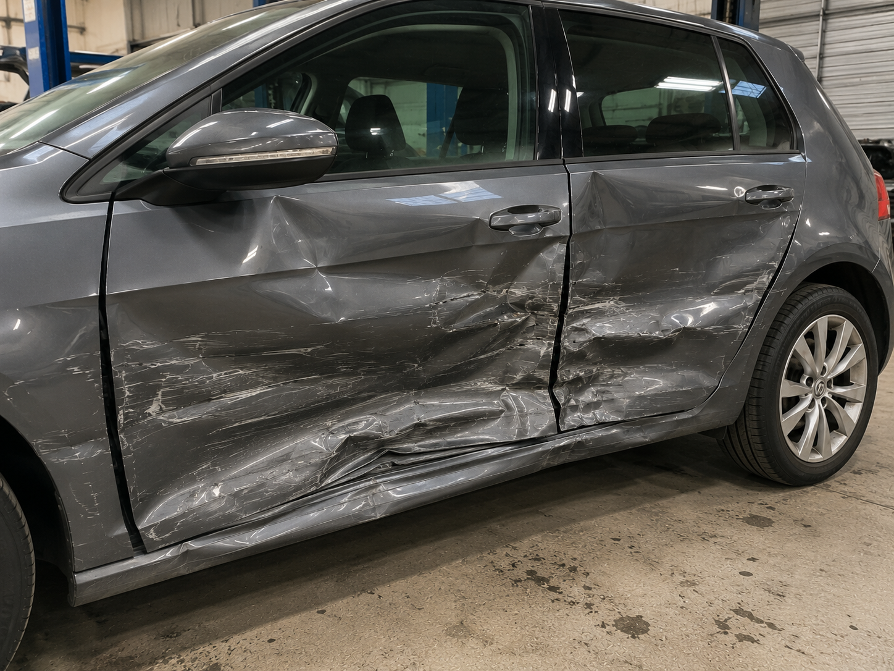

Chaque zone est préparée avec précision pour retrouver une surface propre et homogène.
Nos réalisations
Avant / après : le résultat parle de lui-même.
Rayures profondes, réparation carrosserie, pare-chocs, optiques de phares, peinture automobile, covering et flocage : découvrez le soin apporté aux véhicules confiés à l'atelier.
Notre savoir-faire en images
Qualité de finition, respect des teintes, soin du détail.
Une réparation réussie doit se voir le moins possible. C'est précisément ce que recherchent nos équipes.
La couleur et la finition sont contrôlées pour prèserver l'aspect d'origine du véhicule.
Les ajustements, contours et finitions sont vérifiés avant restitution.
Le véhicule est rendu avec une attention particulière à l'impression finale.
Rayures profondes
Effacer la marque, protéger la carrosserie.
Correction, préparation et remise en peinture selon la profondeur de la rayure.
Rayure voiture
Réparation aile avant
Renault Clio - suite à un frottement urbain.
Finition peinture
Correction latérale
Citadine - reprise localisée et rendu homogène.
Réparation carrosserie
Des chocs repris avec méthode.
Réparation carrosserie en Dordogne pour chocs légers, intermédiaires ou interventions plus complètes.
Carrosserie Champcevinel / Périgueux
Réparation aile avant
Suite à un choc urbain avec préparation et finition peinture.


Remise en état
Élément latéral
Reprise d'alignement et contrôle visuel de finition.
Pare-chocs
Réparer plutôt que remplacer quand c'est possible.
Réparation pare-chocs plastique, préparation de surface et remise en peinture.
Réparation pare-chocs
Pare-chocs arrière
Reprise plastique et rendu homogène après peinture.
Optiques de phares
Plus de transparence, plus de sécurité.
Rénovation phare pour améliorer l'esthétique, la visibilité et la prèsentation au contrôle technique.
Rénovation phare
Optique ternie
Récupération de transparence et finition plus nette.
Covering
Personnaliser ou protéger avec un rendu premium.
Covering partiel, complet ou protection carrosserie pour un véhicule plus distinctif.
{kind=link}
Flocage
Des véhicules professionnels qui travaillent votre image.
Utilitaires, véhicules commerciaux et flottes : un marquage propre pour être visible localement.
Confiance
Chaque véhicule confié à notre atelier bénéficie d'une attention particulière afin de retrouver son aspect d'origine dans les meilleures conditions.
Que vous veniez de Champcevinel, Périgueux, Boulazac, Trélissac, Chancelade ou d'ailleurs en Dordogne, notre objectif reste le méme : une réparation claire, une finition soignée et un résultat qui inspire confiance.